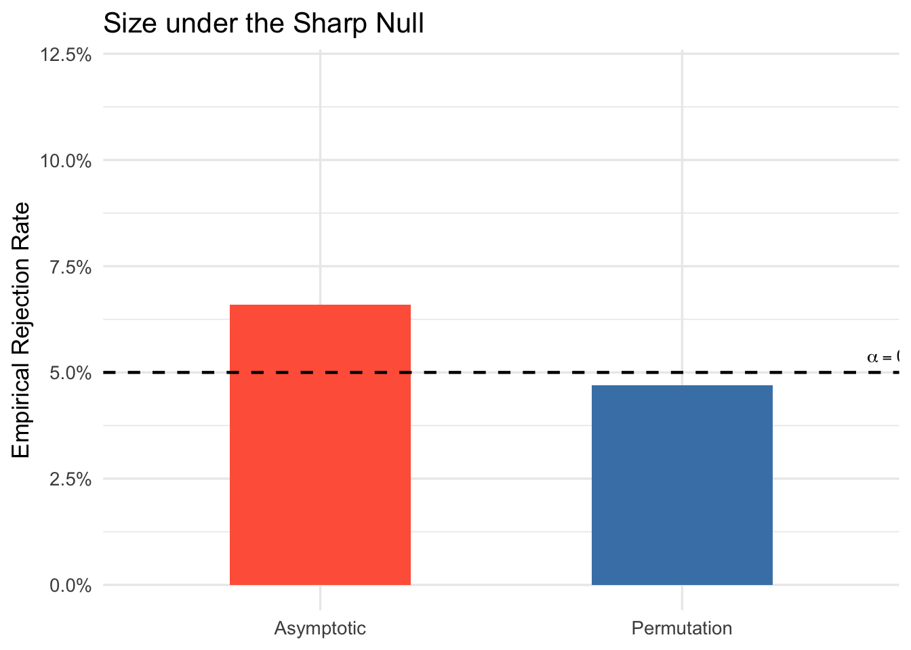

Set simulation parameters
n_sims <- 1000 # Monte Carlo replications
n <- 100 # Sample size
B <- 100 # Permutations per replication
alpha <- 0.05 # Nominal levelWe compare the empirical rejection probabilities of two tests at significance level \(\alpha = 0.05\):
| Test | Decision rule |
|---|---|
| Permutation | \(\phi_n^{\text{perm}} = 1\) if perm_test() returns 1 |
| Asymptotic | \(\phi_n^{\text{asy}} = \mathbf{1}\{|T_n| > 1.96\}\) |
Under the sharp null \(H_0 : Y_i(1) = Y_i(0)\) a.s., both tests should reject approximately \(100\alpha\%\) of the time. A rejection frequency below \(\alpha\) indicates a conservative test; a rejection frequency above \(\alpha\) indicates an anti-conservative (size-distorted) test. Anti-conservatism is particularly problematic because it means the nominal level \(\alpha\) is not controlled.
n_sims <- 1000 # Monte Carlo replications
n <- 100 # Sample size
B <- 100 # Permutations per replication
alpha <- 0.05 # Nominal level# output[i, 1] = permutation test result
# output[i, 2] = asymptotic test result
output <- matrix(NA_real_, nrow = n_sims, ncol = 2)
for (i in seq_len(n_sims)) {
# 1. Generate data under the sharp null
data_i <- gen_data_PO(n = n, te.mean = 0, te.sd = 0, p = 0.5, type = "normal")
# 2. Observed test statistic
Y1_i <- data_i$Y[data_i$D == 1]
Y0_i <- data_i$Y[data_i$D == 0]
Tn_i <- abs(Tn_stat_variance(Y1_i, Y0_i))
# 3. Permutation distribution
perm_i <- group.action(data_i$D, B, type = "permutations")
Tn_perm <- numeric(B)
for (j in seq_len(B)) {
Y1_j <- data_i$Y[perm_i[, j] == 1]
Y0_j <- data_i$Y[perm_i[, j] == 0]
Tn_perm[j] <- abs(Tn_stat_variance(Y1_j, Y0_j))
}
# 4. Store results
output[i, 1] <- perm_test(c(Tn_perm, Tn_i), alpha) # permutation
output[i, 2] <- as.numeric(Tn_i > 1.96) # asymptotic
}rej_rates <- colMeans(output)
names(rej_rates) <- c("Permutation", "Asymptotic")
knitr::kable(
data.frame(
Test = names(rej_rates),
`Rejection Rate` = round(rej_rates, 3),
`Nominal Level` = alpha,
`Conservative?` = ifelse(rej_rates < alpha, "Yes", "No"),
check.names = FALSE
),
align = "lccc"
)| Test | Rejection Rate | Nominal Level | Conservative? | |
|---|---|---|---|---|
| Permutation | Permutation | 0.047 | 0.05 | Yes |
| Asymptotic | Asymptotic | 0.066 | 0.05 | No |
df_bar <- data.frame(
Test = c("Permutation", "Asymptotic"),
Rate = rej_rates
)
ggplot(df_bar, aes(x = Test, y = Rate, fill = Test)) +
geom_col(width = 0.5, show.legend = FALSE) +
geom_hline(yintercept = alpha, linetype = "dashed", colour = "black", linewidth = 0.8) +
scale_fill_manual(values = c("Asymptotic" = "tomato", "Permutation" = "steelblue")) +
scale_y_continuous(limits = c(0, 0.12), labels = scales::percent_format()) +
annotate("text", x = 2.6, y = alpha + 0.004,
label = expression(alpha == 0.05), size = 3.5) +
labs(
x = NULL,
y = "Empirical Rejection Rate",
title = "Size under the Sharp Null"
) +
theme_minimal(base_size = 13)
Under the sharp null, the permutation test should yield an empirical rejection frequency at or below \(\alpha = 0.05\) by the exactness theorem (Section 4.8). The asymptotic test, by contrast, relies on the normal approximation to the distribution of \(T_n\), which may not be accurate in finite samples.
Increasing \(B\) (the number of Monte Carlo permutations) reduces the approximation error in \(\hat{c}_n(1-\alpha)\) and brings the empirical size of the permutation test closer to the nominal level.
The table below summarises the full permutation test algorithm as implemented above.
| Step | Operation | Output |
|---|---|---|
| 1 | Observe \(W^{(n)}\); compute \(T_n(W^{(n)})\) | \(T_n\) |
| 2 | Draw \(g_1, \ldots, g_B \sim \text{Uniform}(\mathcal{G}_n)\) | \(B\) permutations |
| 3 | Recompute \(T_n(g_b W^{(n)})\) for \(b = 1, \ldots, B\) | \(\{T_n^{(b)}\}_{b=1}^B\) |
| 4 | Sort: \(T_n^{(1)} \leq \cdots \leq T_n^{(B+1)}\) (include \(T_n\) as \(g_1 = \text{id}\)) | Order statistics |
| 5 | Set \(k = (B+1) - \lfloor (B+1)\alpha \rfloor\); \(\hat{c}_n = T_n^{(k)}\) | Critical value |
| 6 | Reject \(H_0\) if \(T_n > \hat{c}_n\) | \(\phi_n^{\text{perm}} \in \{0,1\}\) |